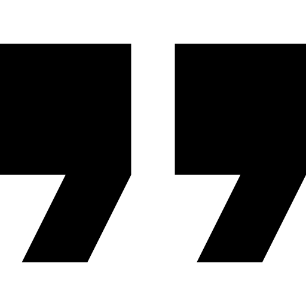

Welcome to my desktop portfolio.
I’m Timothy Mims, a frontend-focused web developer and designer based in North Carolina. I build clean websites, brand-focused layouts, and business-minded digital experiences that help companies look stronger and convert better. This desktop layout is meant to feel simple, interactive, and personal, while still being easy enough to build with Bootstrap, CSS, and JavaScript.
What I care about
Clean design, strong messaging, better user flow, and websites that support real goals instead of just looking nice.
Main focus
I am a front-end developer focused on building clean, modern user interfaces. I prioritize user-first design by creating clear, accessible, and easy-to-navigate digital experiences with a strong sense of purpose.
Click the desktop icons to open different windows.
This version feels more like an actual computer desktop. Each icon opens its own window, which makes the site more interactive without needing advanced code. It is a better match for a beginner-to-intermediate Bootstrap project because the layout is still simple, but the interaction makes it stand out.
Hey, I’m Tim.
I’m a web developer, designer, and builder who likes making websites that feel clean, modern, and purposeful. A lot of my work sits in the space between design and strategy. I care about how a site looks, but I also care about whether it helps the business or brand actually get results.
I lead a lot of the tech and web work for Merit Moving, and I’m also building Circuit Tech Solutions with the goal of creating websites and digital systems that help clients grow. My approach is simple: don’t just sell a website, build something that helps the client communicate clearly, look trustworthy, and move people toward action.
I enjoy creative layouts, strong typography, and interfaces with personality, but I still want my work to feel organized and useful. That balance between clean structure and originality is what I try to bring into every project.
Quick Facts
Based in Raleigh area • Frontend-focused • CEO of Circuit Tech Solutions • Works with Merit Moving • Interested in UI, branding, and business websites
What I’m building toward
More client work, stronger case studies, better systems, and a portfolio that shows both my visual style and my ability to solve real business problems.
Current style
Clean, modern, slightly bold, and user-first. I like sites that feel polished without feeling overdone.
Things I’ve worked on.

Random Quote Generator
A JavaScript-based app that generates random quotes, helping practice DOM manipulation and dynamic content updates.
.png)
Merit Moving
I’ve worked on improving Merit Moving’s website with a focus on trust, clearer structure, better calls to action, and stronger local SEO direction.
Troop 253 Website
A modern redesign for a Boy Scouts troop focused on providing clear information for parents, new members, and current scouts.

Tools and strengths.
My strongest work usually comes from combining design thinking with frontend execution. I like making layouts that feel clean and custom, then using code to bring them to life in a way that still feels practical.
Frontend Development
Building pages that are responsive, readable, and visually strong across screen sizes.
Design + Layout
Using spacing, hierarchy, and typography to make sites feel cleaner and easier to understand.
Business-Focused Thinking
Thinking past the visuals and asking how the site helps the client build trust, communicate better, and get results.
Creative Direction
Coming up with concepts that feel more unique than a standard template while still being realistic to build.
Let’s make something good.
If you want to talk about a website, a redesign, a landing page, or a creative project, this is where you’d reach me. I’m especially interested in work that needs both clean presentation and real business value.
- Email: tjmims33@gmail.com
- GitHub: https://github.com/TwoStepTim
- LinkedIn: https://www.linkedin.com/in/timothy-mims-9b208421a/
Best fit
Business websites, portfolio sites, landing pages, redesigns, and creative brand-focused work.
What I value
Clear communication, strong direction, and building something that actually serves a purpose.
What belongs in this window.
- Role direction: Frontend developer, web designer, or UI-focused web role
- Education: Wake Tech coursework and continued frontend practice
- Experience: Circuit Tech Solutions, Merit Moving web/marketing work, freelance and concept builds
- Core tools: HTML, CSS, JavaScript, Bootstrap, Webflow, GitHub
- Strengths: Clean layouts, design presentation, content structure, and business-minded websites
Later, this can become a real downloadable resume section with a button, PDF link, or embedded preview.